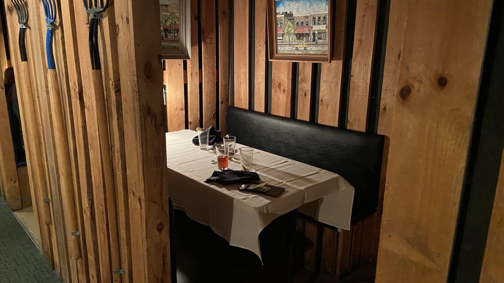

Since 1963 · Ridinger Estate
A farmhouse with a story to tell
The Farmhouse has served true Southern comfort in Christiansburg since 1963, in a building that dates to the 1800s , the old Ridinger Estate. The rooms are rustic and warm: wood, brick, a crackling quiet that makes it the place for date nights and special occasions.
In the 1970s a vintage train caboose found its way here and became one of the most loved dining rooms in the New River Valley. Today the Farmhouse is a banquet hall too, seating up to 175 for weddings, reunions, and Hokie football wins.
The porch with rocking chairs says everything about this place before the food even arrives.Google review · a porch regular
